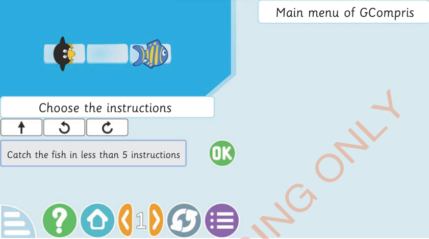

Figure 8: Programming maze game
2.
Pick the instructions from the control panel.
3.
Arrange these instructions in the main function to guide Tux to the delicious fish. Explore Figure 8 and its description.
4.
Complete all the instructions depending on the path. Then, press OK as shown Figure 8.
Note: You can play the game as many times as you would like.